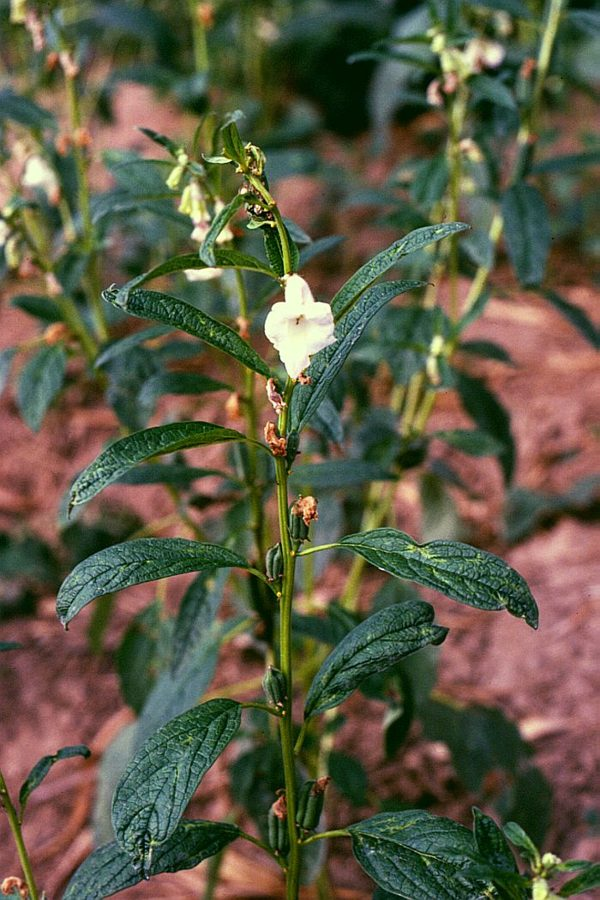

तिलSesame
Sesamum indicum · Pedaliaceae · FLR-0145

- Scientific name
- Sesamum indicum L.
- Family
- Pedaliaceae
- Hindi
- तिल
- Status here
- cultivated
- IUCN
- not evaluated
- Review
- audited and independently read
When to look कब देखें
Present all year.
Uses and possibilities उपयोग और संभावनाएँ
“Traditional medicine” means a documented traditional use, not a claim that it works. Nothing on this page is medical advice.
Drawn from the documented uses in the profile below, where each is labelled traditional, current or a research lead. All uses →
तिल / Sesame
Sesamum indicum L. — Pedaliaceae
तिल — भारत की सबसे पुरानी तेल की फसलों में से एक, जिसका इतिहास पाँच हज़ार साल से भी पुराना है। यह गर्मी और बरसात की फसल है। पौधा एक-डेढ़ मीटर तक ऊँचा, तना सख़्त, पत्तियाँ चौड़ी और हल्की हरी, फूल सफेद, गुलाबी, या बैंगनी। सबसे महत्वपूर्ण हिस्सा छोटे फल हैं जिनमें हज़ारों बीज होते हैं। ये बीज घानी में पेरकर तेल निकाला जाता है — तिल का तेल (sesame oil) जो खाने में, दीपक में, और कॉस्मेटिक में आता है। तिल के बीज को खिचुड़ी और गुड़ से खीर बनती है। तिल पवित्र माना जाता है — दान में, पूजा में, और श्राद्ध में तिल का इस्तेमाल होता है।
Quick Identification त्वरित पहचान
| Feature | Description |
|---|---|
| Plant height | 0.6–1.5 m, erect, unbranched or sparsely branched |
| Stems | Stout, angular, slightly hairy, rigid |
| Leaves | Simple, lanceolate to ovate, 5–15 cm, toothed margins, opposite to alternate |
| Flowers | Tubular, 5-lobed, white, pink, or purple, borne in axillary or terminal clusters |
| Capsules | Elongated, 2–3 cm, with 4–8 compartments, each containing 15–20 small seeds |
| Seeds | Tiny, 3–4 mm, white, cream, brown, or black depending on variety; high oil content |
Field tip: Walk through a summer field in August–September. Look for tall, straight-stemmed plants with tubular flowers in pink or purple clusters. The fruits are small capsules that rattle when shaken. The plant has a strong, pleasant aroma.
Morphology आकारिकी
Biometrics (typical measurements for Indian varieties):
| Measurement | Range |
|---|---|
| Plant height | 0.6–1.5 m |
| Leaf length | 5–15 cm |
| Leaf width | 2–8 cm |
| Flower length | 1.5–2.5 cm |
| Capsule length | 2–3 cm |
| Seeds per capsule | 200–300 |
| Seed diameter | 3–4 mm |
Root system: Taproot system, relatively deep; tolerant of drought once established.
Stems: Stout, angular, rigid, slightly hairy, green with reddish veining in some varieties. Minimal branching; most flowers arise in axillary clusters.
Leaves: Simple, lanceolate to ovate, with a toothed margin. Lower leaves are opposite; upper leaves become alternate. Texture is soft when young, becoming tougher as the plant matures. The upper leaf surface is smooth; the lower is hairy.
Flowers: Tubular, 5-lobed, with a long style extending beyond the anthers. Color varies by variety: white, light pink, or dark purple. The flowers are pollinated by insects (bees) and also self-pollinate. Flowering is indeterminate; a single plant can bear flowers over 30–40 days.
Capsules (fruits): Elongated, slightly flattened, with 4–8 internal compartments (locules), each containing a column of 15–20 seeds. The capsule wall is tough and papery, and the capsule remains closed at maturity, requiring threshing for seed extraction. The dehiscence varies by variety: some capsules naturally split open when dry (preferred by traditional farmers), others remain closed (preferred for mechanized threshing).
Seeds: Tiny, 3–4 mm long, with a thin seed coat. The kernel contains 40–50% oil. Color varies by variety and is often selected for market appeal: white, cream, brown, or black seeds are all cultivated.
हिंदी: तना ठोस, सीधा, कोई शाखा नहीं। पत्ती सरल, चौड़ी। फूल गुच्छों में, सफेद से बैंगनी रंग। फल छोटे कैप्सूल, हज़ारों बीज।
Behaviour & Ecology व्यवहार और पारिस्थितिकी
A warm-season annual oilseed crop of African and Asian origin, Sesamum indicum is now cultivated in tropical and subtropical regions worldwide. In India, it is a monsoon crop (Kharif), thriving in temperatures of 22–30°C. The crop requires moderate rainfall and good drainage; waterlogging causes root rot.
The plant is relatively hardy and tolerant of poor soils, but performs better with modest nutrients. It responds to phosphorus, which is critical for flower and seed development. The crop is moderately drought-tolerant once established but benefits from timely irrigation in dry spells.
The plant's ability to produce high-oil seeds makes it economically attractive. In traditional agriculture, seed varieties that naturally dehisce are preferred, as the farmer can simply beat the mature plants over a cloth to harvest seed. Modern mechanized threshing has led to selection for non-dehiscent varieties.
हिंदी: तिल गर्मी की फसल है। सूखा सहन करता है, पर बरसात भी चाहिए। कमज़ोर मिट्टी में भी उगता है।
Life Cycle / Phenology जीवन चक्र
| Month / Season | Event |
|---|---|
| May–June | Field preparation |
| June–July | Sowing directly into the field (no nursery) |
| July–August | Germination and vegetative growth; rapid height gain |
| August–September | Flowering; peak insect visitation |
| September–October | Pod maturation; seed hardening |
| October–November | Harvest when plants have dried down |
From sowing to harvest: 80–100 days, depending on variety and conditions.
हिंदी: जून-जुलाई में बीज बोते हैं, अगस्त-सितंबर में फूल खिलते हैं, अक्टूबर तक फल पक जाते हैं।
Cultivation Calendar कृषि कैलेंडर
| Stage | Month(s) |
|---|---|
| Field preparation and ploughing | May–June |
| Direct sowing of seeds | June–July |
| Germination and seedling establishment | July |
| Vegetative growth and weeding | July–August |
| Flowering and pollination | August–September |
| Pod development and seed filling | September–October |
| Pod maturation and harvest | October–November |
| Threshing and storage | November onwards |
Associated Species / Interactions संबंधित प्रजातियाँ
- Pollinator dependence: Bees and other insects visit the flowers.
- Crop rotation: Often rotated with Wheat, pulses, or cotton.
- Intercropping: Sometimes grown with groundnut or other crops.
Pests and Diseases कीट और रोग
- Shoot and capsule borers: Lepidopteran larvae bore into developing organs.
- Leaf spot diseases: Fungal infections in wet seasons.
- Powdery mildew: In dry, dusty conditions.
- Root rot: In waterlogged soils.
- Relatively hardy: Fewer serious pests than cotton or groundnut.
Agricultural / Human Relevance कृषि प्रासंगिकता
Oil production. The seeds contain 40–50% oil of high nutritional and commercial value. The oil is extracted by traditional ghani (hand mill) in villages or in modern oil mills. Sesame oil has a distinctive nutty flavor and is used in cooking, particularly in regional cuisines (south India, northeast India). The oil is also used in cosmetics, pharmaceuticals, and as lamp oil.
Traditional medicine. In Ayurveda, sesame oil is considered warming (ushna) and is used for massage (abhyanga), for skin conditions, and as a laxative. The seeds are taken as a laxative and for bone health.
Seed uses. The seeds are eaten whole in sweets (e.g., til gud, sesame seed brittle), in breads, and as a garnish. The seeds are also ground into paste and used in regional cuisines.
Sacred and religious significance. Sesame is one of the most sacred plants in Hindu and Buddhist traditions. Sesame seeds are offered in rituals, particularly during tilak (marking the forehead) and til-daan (donation of sesame), both associated with pitru paksha (the fortnight of ancestors). The plant is mentioned in ancient Sanskrit texts as a symbol of immortality.
Nutritional value. Sesame seeds are rich in minerals (calcium, magnesium, phosphorus), vitamins (E, B), and antioxidants. The oil is considered nutritious and helps maintain skin health.
Livelihoods. Sesame cultivation and oil production provide income to farmers. The byproduct (sesame cake after oil extraction) is used as livestock feed or fertilizer.
Climate and trade. Sesame is traded internationally; India is a major exporter. Traditional varieties are often saved by farmers and exchanged in local networks.
Modern varieties: Improved varieties developed by ICAR offer higher yields and disease resistance. Local landraces are also maintained for their unique flavors and cultural significance.
हिंदी: तिल का तेल सेहत के लिए अच्छा होता है। तिल का दान पूजा में महत्वपूर्ण है। किसान अपने बीज बचाते हैं।
Expected Locally स्थानीय रूप से अपेक्षित
Not a field record. Written from published accounts for eastern Uttar Pradesh. No confirmed local sighting yet — if you have seen it, that is what the atlas needs.
अभी तक स्थानीय पुष्टि नहीं। यह विवरण प्रकाशित स्रोतों से है, किसी अवलोकन से नहीं।
Expected as a cultivated crop in fields throughout Basti district, particularly in well-drained uplands. The crop is visible in summer (June–October). Sesame seeds are sold in local markets and are central to regional cuisines and religious practices.
Distribution वितरण
Global range: Native to Africa; cultivated in tropical and subtropical Asia for thousands of years; now grown globally.
In India: Cultivated in all states, particularly in central and eastern India; major producer of sesame oil and seeds.
In Uttar Pradesh: Cultivated in eastern districts as a monsoon crop; smaller extent than in central India.
In Basti district / eastern UP: Cultivated as a Kharif crop; expected in all agricultural blocks.
Research Questions शोध प्रश्न
Anyone can investigate these | कोई भी इन प्रश्नों की जाँच कर सकता है
- What varieties of sesame are grown in your area? / आपके इलाके में कौन-कौन सी किस्में उगती हैं? — Interview farmers; note variety names, seed colors, and yields.
- How many seeds does a single plant produce? — Harvest 10 mature capsules, thresh, and count seeds.
- Which insects visit the sesame flowers? — Sit near flowering plants in early morning for 15 minutes; count and identify insect visitors.
- Can traditional hand-extraction of sesame oil compete with modern oil mills? — Interview traditional oil producers; document their yields and profits.
- What are the traditional uses of sesame in your community's religious practices? / आपके समुदाय में तिल का उपयोग धार्मिक रूप से कैसे होता है? — Interview community leaders; document the significance and rituals.
Similar Species मिलती-जुलती प्रजातियाँ
| Species | How to tell apart | हिंदी |
|---|---|---|
| groundnut (Arachis hypogaea) | Lower height; leaflets compound; flowers yellow; fruit buried underground | मूँगफली — कम ऊँचा; कम्पाउंड पत्ती |
| cotton (Gossypium spp.) | Larger plant; lobed leaves; large yellow flowers; fruit is a bolly (capsule) with fibers | कपास — बड़ी पत्ती, पीले फूल, रुई |
| Sunflower (Helianthus annuus) | Much larger flowers (10–30 cm); distinctive yellow flower head with dark center; not aromatic | सूरजमुखी — बहुत बड़े फूल |
Field rule: A medium-height, straight, unbranched plant with simple leaves, tubular flowers in pink or purple clusters, and small capsular fruits containing thousands of tiny oil-rich seeds is sesame.
Taxonomy & Classification वर्गीकरण
Original description. Carl Linnaeus described Sesamum indicum in 1753 in Species Plantarum. The genus name Sesamum is from the Arabic simsim (sesame). The specific name indicum indicates "of India," though the plant's origin is actually African.
Subspecies. Monotypic as a species, but with many cultivars differing in plant height, flower color, and seed color.
Family and order placement. Pedaliaceae, order Lamiales. The family contains herbaceous plants with tubular flowers. Sesamum is the most economically important genus in the family.
Phylogenetic notes. Sesamum indicum is derived from African wild ancestors (e.g., Sesamum angustifolium, Sesamum alatum). Domestication occurred in Africa and was followed by spread to Asia via trade routes over 3000 years ago.
IUCN status rationale. Not evaluated. As a domesticated crop, it is not assessed for extinction risk.
Photo Gallery फोटो गैलरी
Photos needed आवश्यक फोटो
- [ ] Whole plant showing height, stems, and leaf arrangement
- [ ] Flowers showing tubular form and color variants
- [ ] Mature capsules on the plant and threshed seeds
References संदर्भ
- Linnaeus, C. (1753). Species Plantarum. Laurentii Salvii, Stockholm, vol. 2, p. 882.
- Hooker, J.D. (1885). Flora of British India, vol. 4. L. Reeve & Co., London.
- Weiss, E.A. (1983). Oilseed Crops. Longman, London.
- Sharma, R., Singh, H. & Sharma, V. (2010). Sesame Cultivation in Eastern India. Indian Journal of Agronomy, 55(4): 334–342.
- Pathak, N. & Akhtar, S. (2016). Nutritional and Pharmacological Importance of Sesame. Journal of Nutrition & Food Sciences, 6(5): 1–7.
- GBIF Occurrence Data — Sesamum indicum, India (2015–2026).
Source file: species/flora/crops/sesame.md